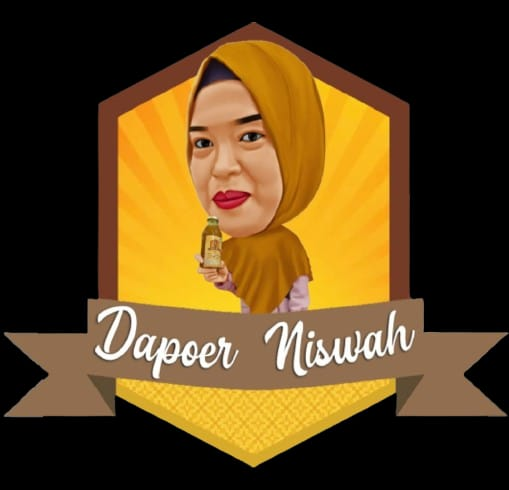

Warisan Leluhur, Khasiat Terpercaya
Jamu tradisional pilihan dari bahan rempah alami terbaik. Merawat kesehatan dan kecantikan dengan cara yang sesungguhnya — seperti yang dilakukan nenek moyang kita.
Setiap produk dibuat dengan penuh cinta menggunakan bahan rempah segar pilihan, tanpa bahan pengawet berbahaya.
Dipilih langsung dari kebun rempah segar, tanpa campuran bahan kimia berbahaya.
Diolah menggunakan resep turun-temurun yang telah terbukti khasiatnya selama generasi.
Proses produksi bersih dan higienis memastikan kualitas setiap tetes jamu kami.
Tersedia pengiriman ke seluruh Indonesia. Pesan hari ini, segera tiba di tangan Anda.
Kesehatan bukan kemewahan. Kami hadir dengan harga yang bersahabat untuk semua kalangan.
Konsultasi gratis, melayani dengan sepenuh hati untuk kesehatan keluarga Anda.
Jamu Dapoer Niswah adalah UMKM yang bergerak di bidang minuman kesehatan tradisional, didirikan pada 27 Maret 2017 oleh Niswah Lestari. Berawal dari kepedulian untuk menghadirkan minuman herbal yang praktis, higienis, dan tetap autentik, Jamu Dapoer Niswah menghadirkan berbagai produk jamu seperti beras kencur, kunyit asam, temulawak, dan lainnya.
Setiap produk kami dibuat dengan tangan yang teliti, menggunakan rempah-rempah segar pilihan dari petani lokal. Tidak ada bahan pengawet, tidak ada pewarna buatan — hanya kebaikan alam yang murni untuk keluarga Anda.
Mengusung misi untuk meningkatkan kesadaran masyarakat akan pentingnya kesehatan alami, Jamu Dapoer Niswah terus berinovasi dalam pengolahan dan penyajian jamu agar relevan dengan gaya hidup modern tanpa meninggalkan resep tradisional Indonesia.
"Sudah 3 bulan minum Induk Kunyit Jahe Merah dari Dapoer Niswah, badan terasa lebih fit dan jarang sakit. Rasanya enak, tidak terlalu pahit!"
"Kunyit Asam-nya segar banget! Cocok diminum sehari-hari. Harga juga terjangkau dibanding yang lain. Recommended banget!"
"Jamu Bersalin-nya membantu pemulihan pasca melahirkan. Terima kasih Dapoer Niswah, sudah jadi teman setia di masa nifas saya!"
"Beras Kencur Dapoer Niswah beda dari yang lain, ada rasa legit dan segar. Anak-anak di rumah malah suka banget!"
"Temulawak-nya ampuh banget buat nafsu makan. Pelayanannya juga ramah dan pengiriman cepat. Pasti order lagi!"
"Manjakani membantu sekali untuk kesehatan kewanitaan saya. Produknya higienis, kualitas terjaga. Sangat puas!"
Punya pertanyaan atau ingin pesan? Kami siap membantu Anda dengan senang hati.
Keranjang masih kosong
Tambahkan produk untuk mulai belanja